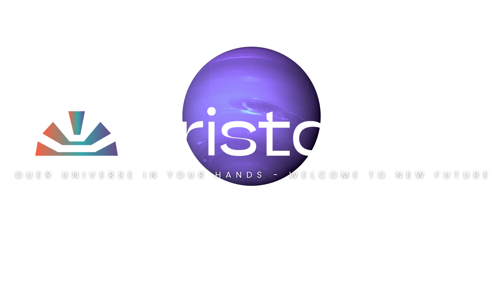
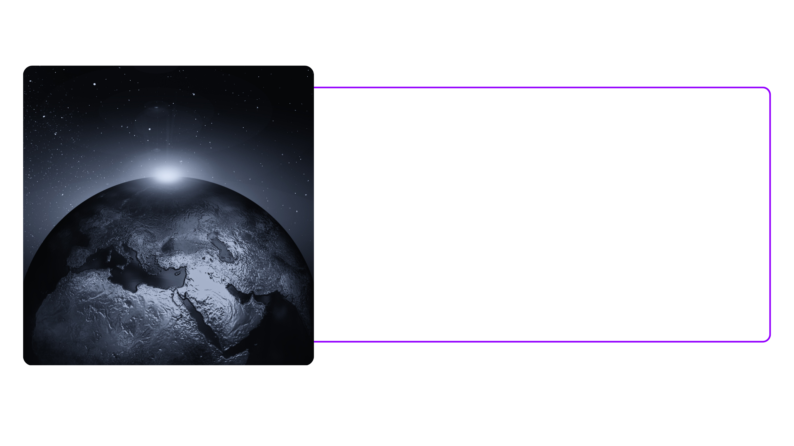
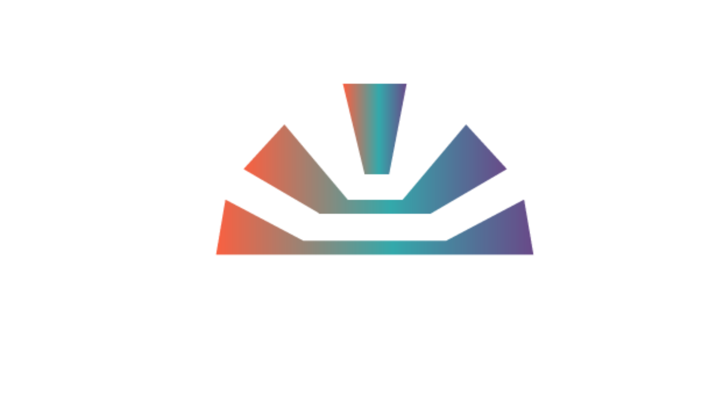

Missão
Na Cristatus, transformamos potencial entre empressas e pessoas em conquistas e resultados reais.
Nossa abordagem vai além de resultados imediatos; buscamos construir processos e planos de ação visando o crescimento autêntico e duradouro de empresas e pessoas, unindo marketing estratégico e desenvolvimento humano em um só propósito.
Acreditamos que o sucesso nasce de um alinhamento verdadeiro entre propósito, inovação e ação consciente. Nossa missão é criar soluções personalizadas de forma que gere um impacto positivo no faturamento do negócio, crescimento financeiro aos envolvidos, qualidade de vida aos clientes, colaboradores e CEO's e todo o ecossistema em um ângulo 360º, algo que não apenas otimizam processos, mas que também inspiram uma transformação profunda – levando você de de seu estado atual ao seu estado desejado de maneira fluida e natural e em constante evolução.
Guiamos nossos clientes com criatividade, expertise técnica, mentoria e acompanhamento personalizado, caminhando juntos em uma jornada de evolução e que transborde em todas as areas da prosperidade, em que cada passo é dado com estratégia e clareza. Porque, para nós, sucesso não é apenas o destino financeiro ou material, mas o desenvolvimento pessoal, espiritual e profissional tomando consequência de um trabalho feito com paixão, significado e excelência.
Seja parte de um ecossistema que valoriza o crescimento contínuo e sustentável, onde resultados são reflexo de quem você é e do impacto que deseja gerar no mundo.
Visão
Nossa visão é ser a referência definitiva em marketing 360º, reconhecida por transformar empresas e pessoas com soluções integradas que unem estratégia de alavancagem e desenvolvimento humano.
O cliente;
Queremos criar um ecossistema onde negócios prosperem de forma sustentável, impulsionados por parcerias autênticas e resultados que superem expectativas. Nosso compromisso é moldar o futuro do mercado de forma inovadora e humana, elevando padrões e criando legados que impactam positivamente o mundo. Elevamos o nível e estrutura corporativa de nossos clientes a um patamar de satisfação, lucreatividade, performance e crescimento constante
O colaborador
Nesse ecossistema, seremos responsáveis por selecionar, treinar e capacitar profissionais com perfis de liderança tornando-os HEAD's de seu setor, construindo internamente seu próprio time operacional, seu sistema de mentoria e posicionamento profissional, expandindo nossa marca, evoluindo talentos e alcançando incontáveis resultados e transformações através de sua performance sendo nosso #Crister.
Juntos, seremos a empresa mais requisitada para construção, desenvolvimento e alavancagem pessoal e profisisonal de todo e qualquer negócio através de estratégias personalizadas de marketing e técnicas de acelerador empresarial.
Valores & princípios
Transformação: Acreditamos no poder da transformação, tanto nos negócios quanto nas pessoas, promovendo o desenvolvimento de ambos de maneira integrada e harmoniosa.
Fazer o que precisa ser feito: Buscamos sempre a excelência em tudo que fazemos, comprometidos com a qualidade e o impacto positivo nos resultados de nossos clientes, além de sempre entregar mais do que o contratado.
Transparência: Mantemos um relacionamento transparente e ético com nossos clientes e parceiros, baseando nossas ações na confiança mútua.
Desenvolvimento Humano: Acreditamos que o sucesso empresarial está intrinsecamente ligado ao crescimento pessoal. Por isso, também investimos no desenvolvimento humano como parte de nossas soluções.

Pilar nº 01
Visão 360º: A Cristatus enxerga o cliente como um todo, integrando o marketing, a estratégia de negócios e o desenvolvimento pessoal, para garantir uma transformação completa e sustentável.
Pilar nº 02
2
Alinhamento de Propósitos: Trabalhamos apenas com clientes cujos propósitos estão alinhados aos nossos. O sucesso mútuo vem do comprometimento com objetivos claros e valores compartilhados.
Pilar nº 03
Focos em Resultado reais e sustentáveis: Buscamos resultados que vão além do lucro imediato. A Cristatus foca em estratégias que geram crescimento sustentável e de longo prazo para nossos clientes
Pilar nº 04
Inovação Contínua: Acreditamos que a inovação é um pilar fundamental. Estar sempre à frente, buscando novas soluções e adaptando-se às mudanças do mercado, garante que ofereçamos as melhores práticas e ferramentas.
Pilar nº 05
Parcerias Autênticas: Valorizamos relações baseadas na confiança e transparência, criando parcerias autênticas tanto com nossos clientes quanto com nossos fornecedores e colaboradores.
Pilar nº 06
Inegociáveis: Nos dedicamos profundamente a pessoas que prezam por sua integridade, honestidade, não renha relacionamentos com precinceito, repudia, intolerância religiosa, gênero ou contra qualquer etinia.

A causa central da Cristatus é a transformação completa de empresas e pessoas através de estratégias integradas de marketing e desenvolvimento humano.
Acreditamos que as empresas não são apenas entidades de lucro, mas partes vitais de um ecossistema que envolve pessoas, sonhos e impacto social. Nossa missão é permitir que os empresários e suas empresas evoluam, não apenas financeiramente, mas também em termos de propósito e contribuição para o mundo.

Diversidade e Inclusão: Promover um ambiente de trabalho e um mercado mais inclusivo, onde todas as vozes e talentos são valorizados, independentemente de gênero, raça, orientação sexual ou origem socioeconômica.
Saúde Mental e Bem-Estar: Defender a importância da saúde mental no ambiente de trabalho e na vida pessoal, promovendo práticas que ajudem a reduzir o estigma e incentivar o autocuidado.
Empoderamento de jovens empreendedores: Apoiamos o desenvolvimento de novos talentos e acreditamos que jovens empresários podem trazer inovação e mudanças positivas para o mercado e a sociedade.
Sustentabilidade empresarial: Defendemos práticas de negócios que visam o crescimento sustentável, tanto no aspecto econômico quanto ambiental, acreditando que empresas devem prosperar de forma ética e responsável.
Desenvolvimento humano e bem-estar: Promovemos o desenvolvimento pessoal e mental dos nossos clientes, parceiros e colaboradores. Sabemos que o sucesso de um negócio está diretamente ligado ao equilíbrio e à saúde emocional das pessoas que o constroem.


2018
A Cristatus nasceu de um desejo profundo de criar uma empresa que fosse além do marketing tradicional, oferecendo soluções completas e transformadoras para empresas e pessoas. No início de sua jornada, a empresa foi fundada sob o nome DesignSight, criada pela visionária Drika Campos quando ela tinha apenas 18 anos. Com um olhar jovem e inovador, Drika começou a atuar no mercado digital, oferecendo serviços de marketing visual e gestão de redes sociais. No entanto, com o tempo, ficou claro que a empresa entregava muito mais do que marketing: oferecia uma verdadeira transformação para os clientes.